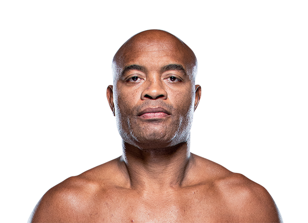

Anderson Silva es considerado uno de los peleadores más grandes en la historia de las artes marciales mixtas. Nació el 14 de abril de 1975 en São Paulo, Brasil. Es conocido por su estilo elegante, su precisión en el striking y su increíble capacidad para noquear a sus oponentes.
Silva se hizo mundialmente famoso durante su etapa en la UFC, donde dominó la división de peso medio durante varios años. Su reinado como campeón fue uno de los más largos en la historia del deporte, defendiendo su título en múltiples ocasiones contra los mejores peleadores de la categoría.
Su estilo de pelea se caracteriza por su gran control de distancia, movimientos impredecibles y una defensa basada en reflejos muy rápidos. Muchas de sus victorias llegaron por nocaut espectacular, lo que lo convirtió en uno de los peleadores más emocionantes de ver.
Gracias a su legado y su impacto en el deporte, Anderson Silva es considerado por muchos fanáticos y analistas como uno de los mejores peleadores de todos los tiempos.
Peso medio (185 lb / 84 kg)
Más de 30 victorias en MMA y uno de los reinados de campeonato más largos de la UFC.